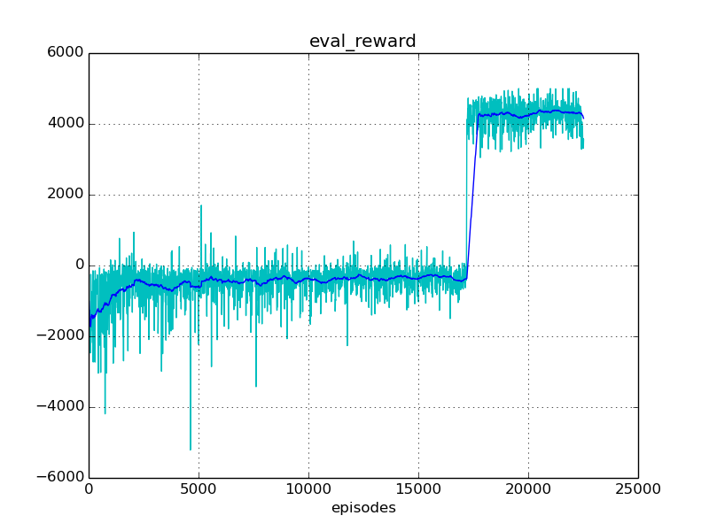

Experiment #003
Reward: 4149
Qmax: 10809
Left: 02:45:30 (75%)
Report time: 2017-01-22 22:18:41
Host name: bernard
Configuration
Experiment:
exp.base_path: experiments/
exp.episodes: 30000
exp.id: 003
exp.logger_class: core.logger.Logger
exp.mind_class: tf.mind.TensorflowMind
exp.platform_class: tf.platform.TensorflowPlatform
exp.save_every_episodes: 200
exp.steps: 50
exp.world_class: zoo.scorpion.world.ScorpionWorld
Algorithm:
alg.batch_size: 128
alg.buffer_size: 100000
alg.noise_rate_method: linear_05_00
alg.noise_sigma: 0.1
alg.noise_theta: 0.01
Mind:
mind.evaluate_every_episodes: 10
Environment:
env.assets: ./assets/
env.episode_jpos_method: jpos_random_target
env.frame_skip: 2
env.id: Zoo:Mujoco:Scorpion-v1
env.init_every_episods: 30
env.reward_method: tentacle_reward
env.step_jpos_method: jpos_do_nothing
env.target_range_xz: [[-0.7, 0.7], [0.5, 1.0]]
env.world.agents: ['scorpion', 'ball']
env.world.scorpion.agents: ['tentacle', 'target']
env.world.scorpion.algorithm:
env.world.scorpion.class: zoo.scorpion.scorpion.ScorpionAgent
env.world.scorpion.inputs: ['ball_x', 'ball_y', 'ball_z']
env.world.scorpion.tentacle.algorithm:
env.world.scorpion.tentacle.inputs: ['target_x', 'target_z']
Reporting:
report.diagram_mean_frame: 50
report.refresh_html_every_secs: 90
report.summary_every_episodes: 30
report.write_every_episodes: 30
Progress
Episodes: 22530
Steps: 1126500
Total time: 11:04:41
spent: 08:19:11 (75%)
left: 02:45:30
Finish: 01:04:11 2017-01-23
Performance: 0.75 per sec
Results
Train reward: +3520.41
Eval reward: +4148.66
Diagrams



Instances
Experiment:
id: 003
work_path: experiments/003
platform: TensorflowPlatform
world: ScorpionWorld:
env_id: Zoo:Mujoco:Scorpion-v1
model_path: ./assets/world.xml
total_act_dim: 6
env: ScorpionEnv:
model_path: /home/roman-ml/prj/rmus/zoo/zoo/scorpion/experiments/003/environment/env_model.xml
sensors:
world.scorpion.sensor_head_pos [1]
world.scorpion.sensor_head_vel [1]
world.scorpion.tentacle.sensor_s1_pos [1]
world.scorpion.tentacle.sensor_s1_vel [1]
world.scorpion.tentacle.sensor_s2_pos [1]
world.scorpion.tentacle.sensor_s2_vel [1]
world.scorpion.tentacle.sensor_s3_pos [1]
world.scorpion.tentacle.sensor_s3_vel [1]
world.scorpion.target.sensor_x [1]
world.scorpion.target.sensor_z [1]
world.ball.sensor_x [1]
world.ball.sensor_y [1]
world.ball.sensor_z [1]
world.ball.sensor_vx [1]
world.ball.sensor_vy [1]
world.ball.sensor_vz [1]
world.ball.sensor_accelerometer [3]
actuators:
world.scorpion.actuator_head [-10 +10]
world.scorpion.actuator_target_x [-2 +2]
world.scorpion.actuator_target_z [-1 +2]
world.scorpion.tentacle.actuator_s1 [-2000 +2000]
world.scorpion.tentacle.actuator_s2 [-1500 +1500]
world.scorpion.tentacle.actuator_s3 [-500 +500]
sensors:
no
actuators:
no
observations:
sensor: world.scorpion.sensor_head_pos=[-0.00174]
sensor: world.scorpion.sensor_head_vel=[-0.000118]
inputs: world.scorpion.inputs_ball_x=[-2.52]
inputs: world.scorpion.inputs_ball_y=[+0.0398]
inputs: world.scorpion.inputs_ball_z=[-4.8]
sensor: world.scorpion.tentacle.sensor_s1_pos=[-0.579]
sensor: world.scorpion.tentacle.sensor_s1_vel=[-0.224]
sensor: world.scorpion.tentacle.sensor_s2_pos=[+0.492]
sensor: world.scorpion.tentacle.sensor_s2_vel=[+0.32]
sensor: world.scorpion.tentacle.sensor_s3_pos=[+0.841]
sensor: world.scorpion.tentacle.sensor_s3_vel=[-0.117]
inputs: world.scorpion.tentacle.inputs_target_x=[-0.2]
inputs: world.scorpion.tentacle.inputs_target_z=[+0.896]
sensor: world.scorpion.target.sensor_x=[-0.2]
sensor: world.scorpion.target.sensor_z=[+0.896]
sensor: world.ball.sensor_x=[-2.52]
sensor: world.ball.sensor_y=[+0.0398]
sensor: world.ball.sensor_z=[-4.8]
sensor: world.ball.sensor_vx=[-0.000356]
sensor: world.ball.sensor_vy=[+0.000524]
sensor: world.ball.sensor_vz=[+6.68e-05]
sensor: world.ball.sensor_accelerometer=[+0.000541,+0.0637,+9.81]
mind: TensorflowMind:
saved_episode: None
algorithm: DummyAlgorithm:
scope: DummyAlgorithm_world
obs_dim: 24
act_dim: 0
agents:
world.scorpion: ScorpionAgent:
model_path: ./assets/scorpion.xml
alg_obs: [-0.00174,-0.000118,-2.52,+0.0398,-4.8,-0.579,-0.224,+0.492,+0.32,+0.841,-0.117,-0.2,+0.896,-0.2,+0.896]
alg_obs_dim: 15
alg_act_dim: 3
sensors:
world.scorpion.sensor_head_pos [1]
world.scorpion.sensor_head_vel [1]
actuators:
world.scorpion.actuator_head [-10 +10]
world.scorpion.actuator_target_x [-2 +2]
world.scorpion.actuator_target_z [-1 +2]
observations:
sensor: world.scorpion.sensor_head_pos=[-0.00174]
sensor: world.scorpion.sensor_head_vel=[-0.000118]
inputs: world.scorpion.inputs_ball_x=[-2.52]
inputs: world.scorpion.inputs_ball_y=[+0.0398]
inputs: world.scorpion.inputs_ball_z=[-4.8]
sensor: world.scorpion.tentacle.sensor_s1_pos=[-0.579]
sensor: world.scorpion.tentacle.sensor_s1_vel=[-0.224]
sensor: world.scorpion.tentacle.sensor_s2_pos=[+0.492]
sensor: world.scorpion.tentacle.sensor_s2_vel=[+0.32]
sensor: world.scorpion.tentacle.sensor_s3_pos=[+0.841]
sensor: world.scorpion.tentacle.sensor_s3_vel=[-0.117]
inputs: world.scorpion.tentacle.inputs_target_x=[-0.2]
inputs: world.scorpion.tentacle.inputs_target_z=[+0.896]
sensor: world.scorpion.target.sensor_x=[-0.2]
sensor: world.scorpion.target.sensor_z=[+0.896]
mind: TensorflowMind:
saved_episode: None
algorithm: DummyAlgorithm:
scope: DummyAlgorithm_world_scorpion
obs_dim: 15
act_dim: 3
agents:
world.scorpion.tentacle: MujocoAgent >>>> training <<<<:
model_path: ./assets/tentacle.xml
alg_obs: [-0.579,-0.224,+0.492,+0.32,+0.841,-0.117,-0.2,+0.896]
alg_obs_dim: 8
alg_act_dim: 3
sensors:
world.scorpion.tentacle.sensor_s1_pos [1]
world.scorpion.tentacle.sensor_s1_vel [1]
world.scorpion.tentacle.sensor_s2_pos [1]
world.scorpion.tentacle.sensor_s2_vel [1]
world.scorpion.tentacle.sensor_s3_pos [1]
world.scorpion.tentacle.sensor_s3_vel [1]
actuators:
world.scorpion.tentacle.actuator_s1 [-2000 +2000]
world.scorpion.tentacle.actuator_s2 [-1500 +1500]
world.scorpion.tentacle.actuator_s3 [-500 +500]
observations:
sensor: world.scorpion.tentacle.sensor_s1_pos=[-0.579]
sensor: world.scorpion.tentacle.sensor_s1_vel=[-0.224]
sensor: world.scorpion.tentacle.sensor_s2_pos=[+0.492]
sensor: world.scorpion.tentacle.sensor_s2_vel=[+0.32]
sensor: world.scorpion.tentacle.sensor_s3_pos=[+0.841]
sensor: world.scorpion.tentacle.sensor_s3_vel=[-0.117]
inputs: world.scorpion.tentacle.inputs_target_x=[-0.2]
inputs: world.scorpion.tentacle.inputs_target_z=[+0.896]
mind: TensorflowMind:
saved_episode: 22399
algorithm: DDPG_PeterKovacs
scope: DDPG_PeterKovacs_world_scorpion_tentacle
obs_dim: 8
act_dim: 3
buffer: ReplayBuffer:
buffer_size: 100000
num_experiences: 100000
episode: 22529
agents:
no
world.scorpion.target: MujocoAgent:
model_path: ./assets/target.xml
alg_obs: [-0.2,+0.896]
alg_obs_dim: 2
alg_act_dim: 0
sensors:
world.scorpion.target.sensor_x [1]
world.scorpion.target.sensor_z [1]
actuators:
no
observations:
sensor: world.scorpion.target.sensor_x=[-0.2]
sensor: world.scorpion.target.sensor_z=[+0.896]
mind: TensorflowMind:
saved_episode: None
algorithm: DummyAlgorithm:
scope: DummyAlgorithm_world_scorpion_target
obs_dim: 2
act_dim: 0
agents:
no
world.ball: MujocoAgent:
model_path: ./assets/ball.xml
alg_obs: [-2.52,+0.0398,-4.8,-0.000356,+0.000524,+6.68e-05,+0.000541,+0.0637,+9.81]
alg_obs_dim: 9
alg_act_dim: 0
sensors:
world.ball.sensor_x [1]
world.ball.sensor_y [1]
world.ball.sensor_z [1]
world.ball.sensor_vx [1]
world.ball.sensor_vy [1]
world.ball.sensor_vz [1]
world.ball.sensor_accelerometer [3]
actuators:
no
observations:
sensor: world.ball.sensor_x=[-2.52]
sensor: world.ball.sensor_y=[+0.0398]
sensor: world.ball.sensor_z=[-4.8]
sensor: world.ball.sensor_vx=[-0.000356]
sensor: world.ball.sensor_vy=[+0.000524]
sensor: world.ball.sensor_vz=[+6.68e-05]
sensor: world.ball.sensor_accelerometer=[+0.000541,+0.0637,+9.81]
mind: TensorflowMind:
saved_episode: None
algorithm: DummyAlgorithm:
scope: DummyAlgorithm_world_ball
obs_dim: 9
act_dim: 0
agents:
no
logger: Logger:
saved_time: 08:15:59
train_history: 22530
eval_history: 2245
reporter: Reporter:
html_path: /home/roman-ml/prj/rmus/zoo/zoo/scorpion/experiments/003/reporter/report.html